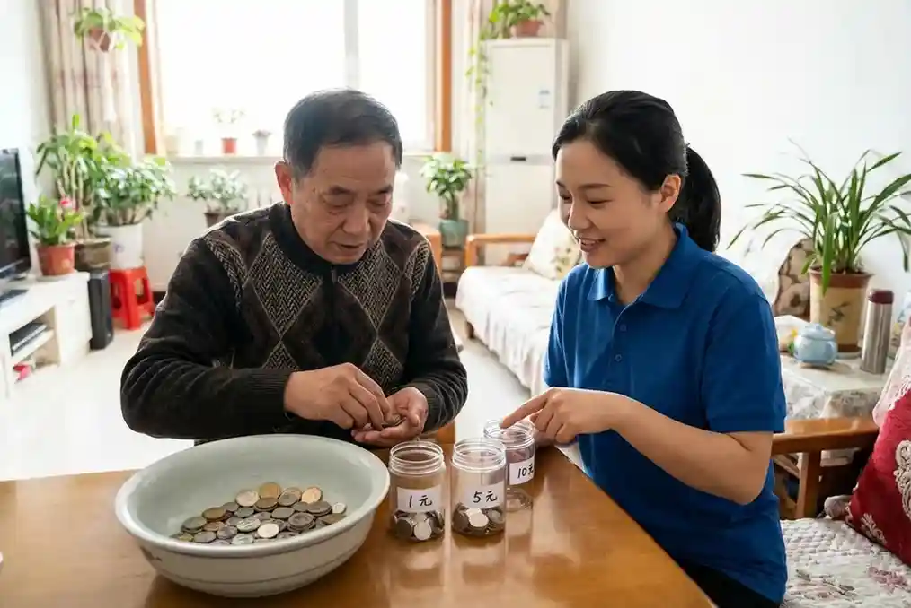

零錢大管家
玩法
準備一個寬口的盤子，裡面混合不同幣值的硬幣（如 1 元、5 元、10 元）。請長者將硬幣分類撿出，分別存入不同的存錢筒或堆成小塔。
進階
請長者計算某一堆硬幣的「總金額」，或者使用筷子/鑷子來夾取硬幣（增加難度）。
訓練部位
指尖捏握能力 (Pincer Grasp)、手指靈活度、認知運算能力、觸覺辨識。
我們的治療師手冊收錄了91項能在家實施的治療遊戲，治療師會按客戶能力指派遊戲。以下精選7項熱門遊戲：
準備一個寬口的盤子，裡面混合不同幣值的硬幣（如 1 元、5 元、10 元）。請長者將硬幣分類撿出，分別存入不同的存錢筒或堆成小塔。
請長者計算某一堆硬幣的「總金額」，或者使用筷子/鑷子來夾取硬幣（增加難度）。
指尖捏握能力 (Pincer Grasp)、手指靈活度、認知運算能力、觸覺辨識。
這項活動能強化大腦對物體的感知能力（立體覺），並訓練詞彙提取。
在一個不透明的袋子裡放入數樣生活用品（如：鑰匙、湯匙、梳子、硬幣）。請長者手伸進去摸，不准看，先描述摸到的感覺，再猜是什麼。
摸到後，請長者說出該物品的三種用途，或該物品在什麼房間會出現。
立體辨識覺（對應在口袋掏鑰匙的能力）、語言組織能力、觸覺回饋。
這是一個結合大肌肉動作與發聲控制的「雙重任務」訓練。
準備一個拍擊面（桌子或大鼓）。您給出指令，例如：「大聲說『嘿』並用力拍一下」、「小聲說『哈』並輕輕拍兩下」。
增加指令複雜度，例如「說水果拍兩下，說動物拍三下」。
肺活量、聲帶閉合力、反應抑制能力（大腦控制動作與聲音的同步）。

您喊「紅色！」，長者就要把球投進紅色籃子；喊「藍色！」投藍色籃子。
設定規則，喊「水果」投左邊，喊「動物」投右邊。
聽覺反應、判斷力、手臂控制。

一邊原地踏步（或坐著踏步），一邊輪流說出「超市買得到的東西」（如：蘋果、衛生紙、牛奶）。不能重複，也不能停下腳步。
改變其他類別。
雙重任務、心肺耐力。